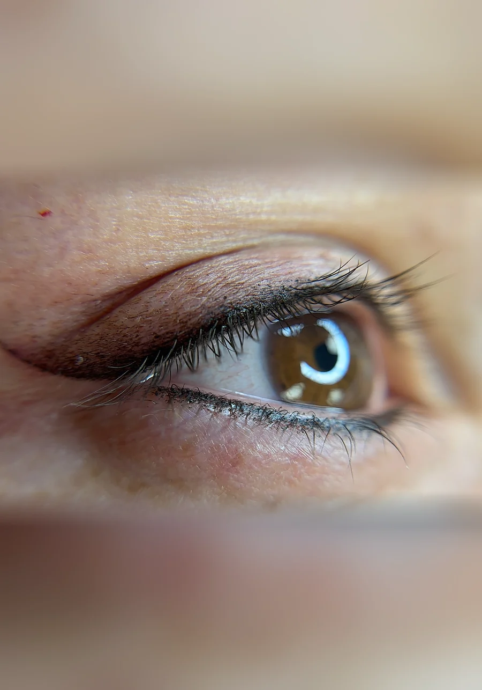
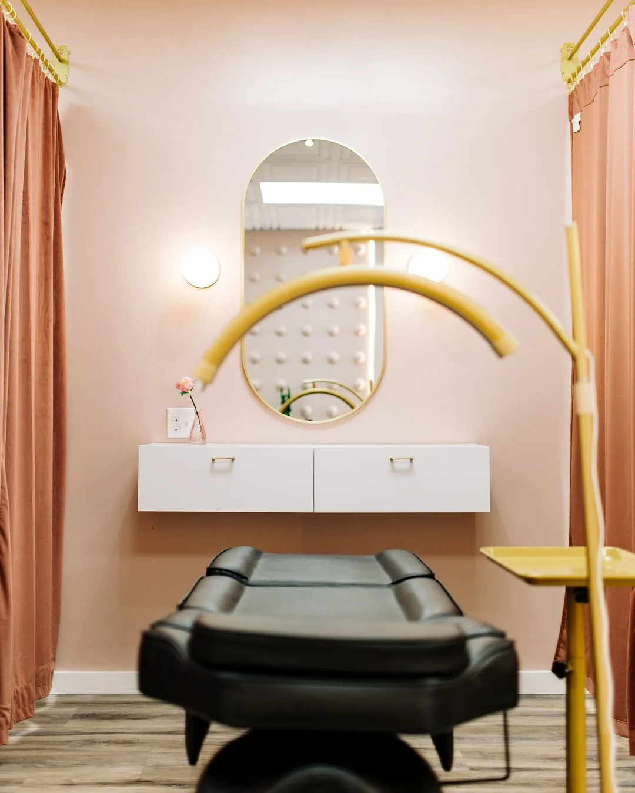

Definition on the lower line
Bottom Eyeliner in Salem, NH
Bottom Eyeliner in Salem, NH costs $250, the most affordable procedure here, adding a fine line along the lower lash line. It is rarely bold: a heavy line can visually close the eye, so most clients pair it with a top liner. Book at 117A Main Street.
Starting at $250 USD
- 20+
- Years in the industry
- 5,000+
- Procedures performed
- EN & PT
- Consultations
Permanent Eyeliner Done Here
Healed permanent eyeliner from the Wilmington, MA and Salem, NH studios. Each photo is labelled with the style that made it.
1 4
How Much Does Bottom Eyeliner Cost in Salem, NH, and What’s Included?
Bottom Eyeliner in Salem, NH costs $250, a single price that already includes the perfecting session 6 to 8 weeks after the procedure. A separate yearly touch-up, from $300, follows roughly 12 months later. Cherry offers 4 interest-free payments or a longer plan.
| Item | Detail |
|---|---|
| Procedure price | $250 |
| What’s included | Consultation, mapping, numbing, and the procedure itself |
| Perfecting session | Included, 6 to 8 weeks after the procedure |
| Yearly touch-up | From $300, about 12 months later |
| Payment plan | 4 interest-free payments or longer, via Cherry; approval not guaranteed |
Want both lines? The Eyeliner Combo is $500, versus $600 booked separately.
Who Should Book Bottom Eyeliner in Salem, NH, and Who Should Not?
Bottom Eyeliner in Salem, NH suits clients who already have, or plan to add, a top liner and want a light finishing touch on the lower lash line. Booking it alone is a legitimate but less common choice. It is not for anyone pregnant, breastfeeding, under 18, or currently using isotretinoin.
- Good fit: clients pairing Bottom Eyeliner with a top liner, or wanting subtle lower-lash definition alone
- Legitimate but less common: booking Bottom Eyeliner alone, without a top liner
- Not a fit: a bold, dark lower line, which reads harsh and can visually close the eye
- Not a fit: anyone pregnant, breastfeeding, or under 18
- Not yet: isotretinoin, blood thinners, autoimmune, or keloid history. See the contraindications guide
- Contact lenses come out for the appointment; the studio says how long to leave them out after
- Active eye infection or recent eye surgery: get clearance from an eye doctor first
How Does a Bottom Eyeliner Appointment Work at the Salem Studio?
A Salem bottom eyeliner appointment is shorter and finer than a top-liner session: consultation, a light lower-lash-line placement under topical numbing, and written aftercare instructions. The perfecting session follows 6 to 8 weeks later, once healing is complete, at no extra charge.
- Consultation and health-history intake, including contact lens removal
- A light lower-lash-line placement, deliberately fine rather than bold
- The procedure, with a sterile single-use needle
- Written aftercare instructions to take home
- Perfecting session, 6 to 8 weeks later, included in the $250
Why Book Bottom Eyeliner at the Salem, NH Studio Specifically?
New Hampshire licenses body art practitioners at the state level under RSA 314-A, unlike Massachusetts’ town-by-town system, and the Town of Salem separately licenses both the artist and the studio under Salem Chapter 433. The studio sits on Route 97, reachable from Methuen, Windham, Pelham, Haverhill, and North Andover within about 8.7 miles.
Main Street is New Hampshire Route 97 along its full length. Salem has no passenger rail station. MBTA Commuter Rail ends at Lowell and Haverhill, in Massachusetts.
| Town | Driving distance |
|---|---|
| Methuen, MA | 4.5 mi |
| Windham, NH | 5.3 mi |
| Pelham, NH | 6.8 mi |
| Haverhill, MA | 8.4 mi |
| North Andover, MA | 8.7 mi |
What Backs the Artist Performing Bottom Eyeliner in Salem?
Adriana Souza Santos, the Master Permanent Makeup Artist performing bottom eyeliner at the Salem studio, has completed more than 5,000 procedures and trained more than 300 students over a 20-plus year career, holds an AAM Diamond Certified Trainer credential, and consults in both English and Portuguese.

Will Bottom Eyeliner Make My Eyes Look Smaller, and Is an MRI a Concern?
The honest fear about bottom eyeliner is that it will make the eyes look smaller. That is why the work is deliberately fine here: a heavy line on the lower lash line visually closes the eye, so intensity is intentionally restrained, never as bold as a top liner.
The American Academy of Dermatology documents that eyeliner pigment can rarely react during an MRI : burning, tingling, or swelling, and advises telling the technician beforehand; see the aftercare guide.
Frequently Asked Questions About Bottom Eyeliner in Salem, NH
Bottom Eyeliner in Salem, NH is performed at 117A Main Street, Salem, NH 03079, reached at (978) 223-7496. The studio is open Monday through Saturday, 10 a.m. to 6 p.m., closed Sunday. A different address and phone number than the Wilmington, MA studio.
Bottom Eyeliner in Salem, NH costs $250, and that price already includes the perfecting session 6 to 8 weeks after the procedure. A yearly touch-up, from $300, follows roughly 12 months later. Cherry offers 4 interest-free payments or a longer plan; approval is not guaranteed.
This is the most common concern, and it is why the line is kept fine. A heavy line on the lower lash line can visually close the eye, so the studio deliberately restrains the intensity here. It is designed to add a soft finishing touch, not a bold line, so eyes read defined rather than smaller.
Yes, booking Bottom Eyeliner alone is a legitimate choice, though most clients pair it with Top Eyeliner instead. Alone, it costs $250 and adds subtle lower-lash definition. Paired with Top Eyeliner at $350, the two together cost $600 separately, or $500 as the Eyeliner Combo, saving $100.
Bottom Eyeliner is the most subtle technique on the menu. Unlike Top Eyeliner, which can be built up to a defined line with a tail, the lower lash line intentionally stays fine, since a bold lower line reads harsh and can visually close the eye rather than open it.
Yes. Contact lenses come out for the bottom eyeliner appointment; the studio says how long to leave them out after. Separately, the AAD documents that eyeliner pigment can rarely react during an MRI with burning, tingling, or swelling; tell the technician beforehand and ask them to stop the scan.
Yes. The Salem studio offers payment plans for the $250 bottom eyeliner price through Cherry Technologies, an independent financing provider, not the studio. Options include 4 interest-free payments or a longer plan up to 24 months; approval is not guaranteed; Cherry sets the terms.
Yes. The Eyeliner Combo costs $500 for both the upper and lower lash line in one Salem appointment, while Top Eyeliner at $350 plus Bottom Eyeliner at $250 booked separately add up to $600. Clients who want both lines from the start save $100 by booking the combo up front.
Yes. Cherry offers 4 interest-free payments, or a longer plan of up to 24 months with interest. Checking your options takes about a minute and uses a soft credit check, so it does not affect your credit score. Cherry is an independent financing provider: it sets approval and rates, not the studio. See how the payment plan works.
The perfecting session exists for exactly that. It is scheduled 6 to 8 weeks after the first appointment, once the skin has healed, and it is included in the original price at no extra charge. Pigment settles differently on different skin, so the second pass is part of the procedure rather than a repair you pay for.
Most clients book a colour refresh every 12 to 24 months; how long the pigment itself lasts depends on the technique and your skin (each service page gives its own range). After that, a yearly touch-up refreshes the colour from $300, priced by how much pigment is left rather than at a flat rate. That is a separate visit from the perfecting session, which is included in the original price and happens in the first weeks.
Yes. Pregnancy, breastfeeding, being under 18, and current isotretinoin use are refused at both studios, with no exception. Blood thinners, autoimmune conditions and a history of keloid scarring need clearance from your doctor first. The full list is published in the contraindications guide before you book, not after.
Adriana Souza Santos has performed more than 5,000 procedures across 20+ years and trained over 300 students. She holds AAM Diamond Certified Trainer status and New Hampshire Body Artist licence 4283, valid through 18 July 2028, which you can verify yourself at the state’s public lookup rather than take on trust.
Explore Other Eyeliner Styles at the Salem Studio
Bottom Eyeliner is one of four eyeliner options at the Salem studio, priced $250 to $500 depending on the lash line treated and how much shading is added. Every technique includes the perfecting session, with its own page for Salem, NH.
- Top Eyeliner in Salem, $350
- Smokey Eyeliner in Salem, $400
- Eyeliner Combo in Salem, $500
Which Licenses Cover This Work in Salem, NH?
Two levels apply in New Hampshire. The state issues Body Artist license 4283 to Adriana Souza Santos, valid through 18 July 2028 and verifiable at the state’s own public lookup. The Town of Salem separately licenses the artist as a Permanent Make-Up Artist under BODA-10 and the establishment under BODE-4.
| License | Classification | Number | Valid through |
|---|---|---|---|
| New Hampshire OPLC | Body Artist | 4283 | 18 Jul 2028 |
| Town of Salem | Permanent Make-Up Artist | BODA-10 | 28 Feb 2027 |
| Town of Salem | Body Art Establishment | BODE-4 | 28 Feb 2027 |
Check the state license yourself. New Hampshire publishes a lookup at forms.nh.gov/licenseverification. Search Adriana Souza Santos, or license 4283, and the state confirms the status without relying on anything published here.
The town license is worth noting: Salem issued BODA-10 specifically as a Permanent Make-Up Artist license under Salem Chapter 433, not as a general tattoo license.
Ready to Book Bottom Eyeliner in Salem, NH?
Book online for real-time availability at 117A Main Street, or call (978) 223-7496 before you commit. Prefer Wilmington, MA? See that studio’s Bottom Eyeliner page.
Book Now in Salem